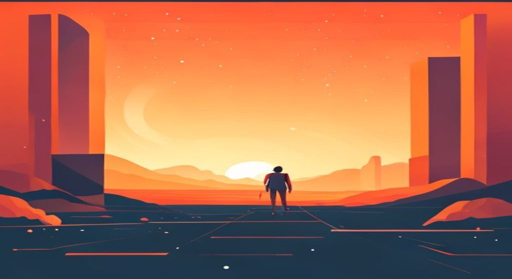
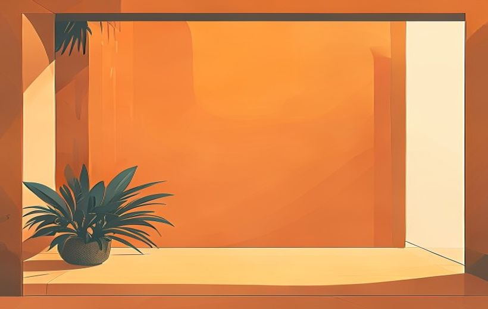
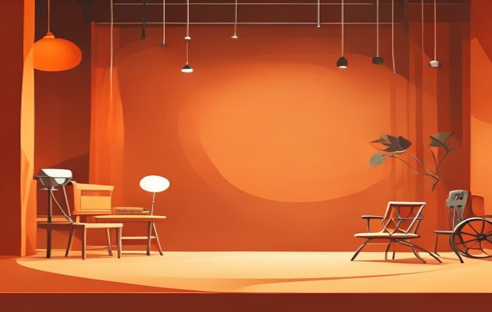

El espacio no es solo el fondo: habla, siente y cuenta cosas. Aprende a leer el espacio fílmico, lo que se ve y lo que se esconde fuera de cuadro, y cómo la escenografía y el atrezo narran sin decir una sola palabra.

El espacio también cuenta cosas en una película.
El espacio cinematográfico no es un decorado vacío: es un personaje más que ubica, caracteriza, emociona y simboliza, tanto si está dentro del cuadro como si queda fuera de él.
🧠 Los conceptos
Despliega cada tarjeta, léela con calma y márcala como entendida. La barra de arriba irá subiendo.
En el cine, el espacio no es decorado pasivo: es un elemento narrativo activo que condiciona la percepción del espectador. No es solo físico — también es simbólico y emocional. El espacio puede ubicar, caracterizar, crear atmósfera, simbolizar y generar conflicto.
Funciones del espacio:
El espacio como elemento narrativo — «El espacio condiciona la percepción del espectador. No es solo físico: es simbólico y emocional». Es «un elemento vivo y cambiante»: no basta con que sea estético, debe «potenciar o dar sentido a la historia» y «reforzar la trama».
Catalizador de la acción — «la percepción se ve condicionada por el entorno». Además, el espacio marca transiciones: «cambiar de espacio puede simbolizar una nueva etapa o un giro en la trama».
Espacios y marcas — el espacio «comunica identidad y valores de marca»; en publicidad «el tiempo es limitado y exige un mensaje visual inmediato».
Cuando hablamos de espacio fílmico, distinguimos entre el espacio que existe dentro del mundo de la historia y el que queda fuera de ese mundo:
| Concepto | ¿Qué es? | Ejemplo |
|---|---|---|
| Espacio diegético | El espacio que existe dentro del relato, que los personajes pueden ocupar y percibir. | El apartamento de los protagonistas en Friends; la Tierra Media en El Señor de los Anillos. |
| Espacio extradiegético | El espacio que queda fuera del relato: el estudio de grabación, la cámara, el equipo técnico. Los personajes no lo perciben. | El plató de rodaje que no vemos nunca; el espacio "detrás" de la cámara. |
Tipos de espacios — ojo: la presentación oficial no usa las palabras «diegético/extradiegético». Su clasificación oficial de tipos de espacios es: Espacio REAL, Espacio ARTIFICIAL y Fuera de campo. Si en el examen preguntan «tipos de espacios», esa es la respuesta que espera el profesor.
Dentro del espacio diegético, además, solo una parte es visible en pantalla. De ahí la distinción clave:
| Concepto | ¿Qué es? | Uso narrativo |
|---|---|---|
| On-screen (dentro de campo) | Lo que se ve en el plano en ese momento. | La acción visible: el rostro del personaje, el objeto que toca… |
| Off-screen (fuera de campo) | Lo que existe en el mundo de la historia pero queda fuera del cuadro. | Sonidos, sombras, reacciones generan expectativa y tensión. Lo que no se ve a menudo es más potente. |

Dentro y fuera de cuadro (on/off screen).
El poder del off-screen: Lo que no se ve activa la imaginación. La mente del espectador llena los vacíos, a menudo con algo más aterrador o intenso que cualquier imagen.
Encuadre vs. Fuera de campo — la fuente usa estos términos en español: Encuadre = «lo que se ve en pantalla»; Fuera de campo = «lo que queda fuera pero tiene carga informativa y emocional».
Sobre el fuera de campo: «el significado no se limita a lo que se ve; lo que no se ve también construye el espacio. Sonidos, sombras o reacciones generan expectativa. Amplía el mundo narrativo. Clave para la tensión y el misterio».
En cualquier producción audiovisual (cine, televisión, publicidad o redes) «siempre hay que seleccionar, elegir o decidir qué es lo que se va a ver de forma explícita y qué queda como parte del fuera de campo».
La composición es la forma en que se organizan todos los elementos dentro del encuadre. El director decide qué se muestra, cómo y dónde. No es casualidad: cada decisión guía la mirada y el significado.
Herramientas compositivas principales:
Recuerda: el encuadre siempre incluye y excluye. Elegir qué entra en el plano es una decisión narrativa.
El encuadre como decisión narrativa — «el encuadre define qué se muestra y cómo se muestra. Incluye y excluye información».
Herramientas compositivas — así llama la fuente a estos recursos de composición; su lista oficial: regla de los tercios, simetría, líneas guía, ley de la mirada y espacio negativo.

La escenografía y el atrezo narran.
La escenografía es el conjunto de elementos visuales que construyen el espacio donde ocurre la historia. No es decorar por decorar: cada elemento tiene un porqué narrativo. Los elementos básicos de una escenografía son:
| Elemento | Qué es | Para qué sirve |
|---|---|---|
| Color | La paleta cromática del espacio | Crea tono emocional: cálidos = energía/peligro; fríos = distancia/frialdad |
| Luces | Duras, suaves, cálidas, frías | Modifica la percepción emocional del espacio |
| Texturas | Superficies, materiales, acabados | Evocan época, clase social, estado emocional |
| Atrezo | Objetos que usan o rodean a los personajes | Caracterizan, anclan la época, simbolizan |
| Estructuras | Muros, arcos, escaleras, niveles | Condicionan el movimiento y la relación entre personajes |
| Vestuario | Ropa y accesorios de los personajes | Personalidad, estatus social, evolución del personaje |
| Imagen gráfica | Carteles, letreros, tipografía en escena | Información de contexto y ambientación |
Elementos básicos para una escenografía — título literal de la fuente (dentro de la sección «Representación simbólica»). La lista oficial: Color, Luces, Texturas, Atrezzo, Estructuras, Vestuario e Imagen gráfica (no electrónica y digital). Ojo a la grafía de la fuente: «Atrezzo», con doble z.
Color en cine — cálidos: rojo (pasión, peligro, fuerza), amarillo (locura, alegría, poder), naranja (energía vital, creatividad, menos agresivo que el rojo). Fríos: azul (soledad, frialdad, confianza, tecnología), verde (naturaleza), violeta (fantasía, magia, misterio).
Luces — la fuente distingue cuatro tipos: duras, suaves, cálidas y frías.
El atrezo (o props) son los objetos que aparecen en escena y que los personajes pueden utilizar. Parece algo menor, pero los objetos cuentan historias:
El orden o desorden en la disposición de los objetos revela estados psicológicos. No es accidental: el diseñador de producción decide cada detalle.
Atrezzo — así lo escribe la fuente (con doble z), como uno de los «Elementos básicos para una escenografía».
Percepción emocional — la idea del orden/desorden viene de aquí: «el orden o desorden o cómo sea la disposición de los objetos revelan estados emocionales».
Para rodar una película o un anuncio, el equipo puede elegir entre espacios reales (localizaciones) o construir espacios artificiales (decorados físicos o digitales):
| Espacio REAL | Espacio ARTIFICIAL | |
|---|---|---|
| Qué es | Localizaciones existentes: calles, casas, bosques, edificios reales | Decorados físicos construidos en estudio o entornos digitales (CGI) |
| Ventajas | Autenticidad, riqueza visual, coste reducido | Control total, repetibilidad, mundos imposibles |
| Limitaciones | Permisos, clima, ruido, imprevistos | Coste elevado, riesgo de parecer artificial |
| Ejemplo | Calles de Nueva York en Spider-Man; Marruecos en Casablanca | Hogwarts (decorado + CGI), Pandora en Avatar |
El reto del espacio digital (CGI): los mundos imposibles también necesitan coherencia y credibilidad interna. La iluminación y las físicas deben integrarse con los personajes reales. Tecnologías como los LED volumes (usados en The Mandalorian) o la generación con IA marcan el futuro.
Espacio REAL — «localizaciones exteriores e interiores». Espacio ARTIFICIAL — «decorados o entornos digitales». (Son dos de los «Tipos de espacios» de la fuente, junto al fuera de campo.)
Espacio artificial DIGITAL — «el reto es la coherencia y credibilidad»: mundos imposibles, «lo fantástico también necesita lógica interna» y «deben integrarse con los personajes y la acción».
El espacio refleja la psicología de los personajes y condiciona cómo se sienten. Un mismo diálogo cambia completamente según el espacio donde ocurre. Por ejemplo: «Tenemos que hablar» dicho en el salón de Friends suena distinto que en un callejón oscuro de El día de la bestia.
El escenario como personaje (identidad propia): algunos espacios adquieren tanta carga emocional en el cine o la televisión que el espectador los reconoce al instante y genera una reacción antes de que empiece la acción. Piensa en:
Además, el orden o desorden de un espacio revela el estado emocional: un piso destruido puede indicar una crisis interna; una habitación clínica puede señalar frialdad o control.
Percepción emocional (reflejo psicológico) — «el espacio representa también la psicología de los personajes. El orden o desorden o cómo sea la disposición de los objetos revelan estados emocionales. Conecta lo visible con lo emocional».
Creación de atmósferas — «un mismo diálogo cambia según el espacio donde ocurre» (el ejemplo del «Tenemos que hablar» es literal de la fuente).
El escenario como «personaje» (identidad propia) — «algunos espacios, tanto en el cine como en televisión, o incluso en redes sociales, adquieren identidad propia. Generan reconocimiento y carga emocional en el espectador».
Una escenografía eficaz requiere que todos los elementos visuales funcionen como un código coherente que refuerce el mensaje narrativo. El espacio debe estar alineado con:
Para lograrlo, el diseño del espacio requiere el trabajo conjunto entre la dirección, el departamento de arte, fotografía y el guion. No es una decisión aislada de un departamento.
El simbolismo funciona cuando es coherente con la historia. Un símbolo fuera de contexto pierde su fuerza o genera confusión.
Lenguaje visual — «el escenario funciona como portador de información, es un creador de atmósferas y un elemento narrativo activo. ¡NO ES SOLO UN FONDO!».
Coherencia interna — «a través de colores, texturas, iluminación y objetos, transmite significados. Debe estar alineado con el tono de la trama y la lógica del relato. Su diseño requiere del trabajo conjunto entre dirección, arte, fotografía y guion».
Código visual — «la forma en que un espacio está iluminado, su grado de orden o desorden, los colores predominantes o cualquier otro elemento debe integrarse en un código visual que refuerce el mensaje narrativo. El simbolismo funciona cuando es coherente con la historia».
📖 Vocabulario del examen
Cómo lo digo fácil → cómo lo llama el PDF (y como saldrá en el examen).
| En fácil | Término oficial del PDF |
|---|---|
| El espacio no es un fondo, cuenta cosas | El espacio como elemento narrativo — «no es solo físico: es simbólico y emocional», «un elemento vivo y cambiante» |
| El espacio empuja la acción | Catalizador de la acción — la percepción se ve condicionada por el entorno |
| Los tipos de espacio que existen | Tipos de espacios: Espacio REAL, Espacio ARTIFICIAL y Fuera de campo (la fuente no habla de «diegético/extradiegético») |
| Lo que se ve en pantalla (on-screen) | Encuadre — «lo que se ve en pantalla»; «define qué se muestra y cómo se muestra. Incluye y excluye información» |
| Lo que no se ve pero existe (off-screen) | Fuera de campo — «lo que queda fuera pero tiene carga informativa y emocional»; clave para la tensión y el misterio |
| Localizaciones de verdad | Espacio REAL — localizaciones exteriores e interiores |
| Decorados de estudio o CGI | Espacio ARTIFICIAL — decorados o entornos digitales; el digital exige «coherencia y credibilidad» (lógica interna) |
| Trucos para colocar las cosas en el plano | Herramientas compositivas — regla de los tercios, simetría, líneas guía, ley de la mirada, espacio negativo |
| Objetos de escena (props) | Atrezzo (con doble z) — uno de los «Elementos básicos para una escenografía» |
| El espacio refleja cómo se siente el personaje | Percepción emocional — «representa la psicología de los personajes»; el orden/desorden revela estados emocionales |
| Espacios famosos que se reconocen al instante | El escenario como «personaje» — espacios con identidad propia que generan reconocimiento y carga emocional |
| Que todo encaje visualmente y cuente lo mismo | Coherencia interna / código visual — todo debe integrarse en un código visual que refuerce el mensaje narrativo |
🃏 Flashcards
Toca cada tarjeta para girarla. Tapa la definición con la mano y comprueba si te la sabes.
✅ Test rápido
6 preguntas tipo examen. Elige una opción y te corrige al momento con la explicación.
⭐ Preguntas del final de la presentación
La presentación no incluye una diapositiva de autoevaluación con preguntas literales. Las siguientes 3 preguntas de práctica recogen los puntos clave del Tema 5 según el contenido del PPTX y del material de estudio. (preguntas de práctica)